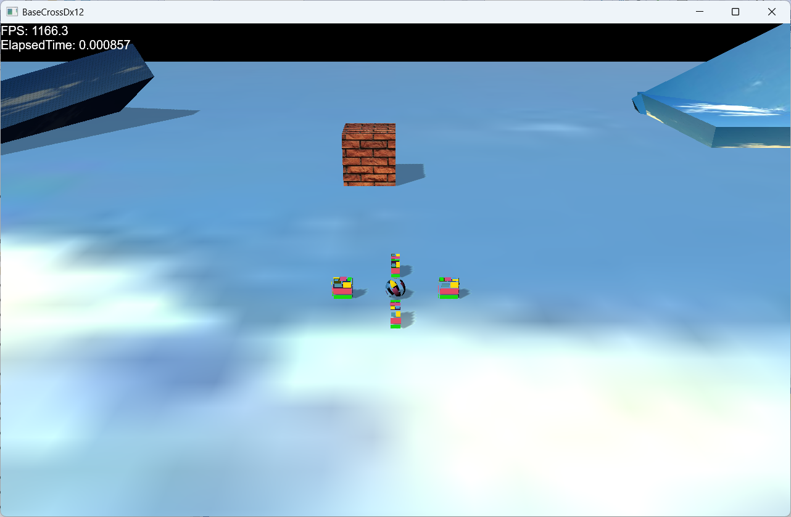
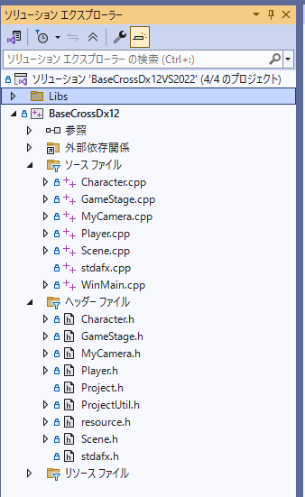

void Scene::CreateAssetResources(ID3D12Device* pDevice, ID3D12GraphicsCommandList* pCommandList)
{
//テクスチャ
auto texFile = App::GetRelativeAssetsDir() + L"wall.jpg";
auto texture = BaseTexture::CreateTextureFlomFile(pCommandList, texFile);
RegisterTexture(L"WALL_TX", texture);
texFile = App::GetRelativeAssetsDir() + L"sky.jpg";
texture = BaseTexture::CreateTextureFlomFile(pCommandList, texFile);
RegisterTexture(L"SKY_TX", texture);
texFile = App::GetRelativeAssetsDir() + L"trace.png";
texture = BaseTexture::CreateTextureFlomFile(pCommandList, texFile);
RegisterTexture(L"TRACE_TX", texture);
texFile = App::GetRelativeAssetsDir() + L"trace3.png";
texture = BaseTexture::CreateTextureFlomFile(pCommandList, texFile);
RegisterTexture(L"TRACE3_TX", texture);
//ステージ作成
ResetActiveStage<GameStage>(pDevice);
}
このようにここではいくつかのテクスチャをリソースとして登録しています。
//--------------------------------------------------------------------------------------
// MyCameraカメラ
//--------------------------------------------------------------------------------------
class MyCamera : public PerspecCamera {
std::weak_ptr<GameObject> m_TargetObject; //目標となるオブジェクト
float m_ToTargetLerp; //目標を追いかける際の補間値
Vec3 m_TargetToAt; //目標から視点を調整する位置ベクトル
float m_RadY;
float m_RadXZ;
//カメラの上下スピード
float m_CameraUpDownSpeed;
//カメラを下げる下限角度
float m_CameraUnderRot;
//腕の長さの設定
float m_ArmLen;
float m_MaxArm;
float m_MinArm;
//回転スピード
float m_RotSpeed;
//ズームスピード
float m_ZoomSpeed;
//左右スティック変更のモード
bool m_LRBaseMode;
//上下スティック変更のモード
bool m_UDBaseMode;
public:
//--------------------------------------------------------------------------------------
/*!
@brief コンストラクタ
*/
//--------------------------------------------------------------------------------------
MyCamera();
//--------------------------------------------------------------------------------------
/*!
@brief コンストラクタ
@param[in] ArmLen 最初のArmの長さ
*/
//--------------------------------------------------------------------------------------
MyCamera(float ArmLen);
//--------------------------------------------------------------------------------------
/*!
@brief デストラクタ
*/
//--------------------------------------------------------------------------------------
virtual ~MyCamera();
//--------------------------------------------------------------------------------------
/*!
@brief カメラの位置を設定する
@param[in] Eye カメラ位置
@return なし
*/
//--------------------------------------------------------------------------------------
virtual void SetEye(const Vec3& Eye)override;
//--------------------------------------------------------------------------------------
/*!
@brief カメラの位置を設定する
@param[in] x x位置
@param[in] y y位置
@param[in] z z位置
@return なし
*/
//--------------------------------------------------------------------------------------
virtual void SetEye(float x, float y, float z)override;
//--------------------------------------------------------------------------------------
/*!
@brief カメラの目標オブジェクトを得る
@return カメラの目標
*/
//--------------------------------------------------------------------------------------
std::shared_ptr<GameObject> GetTargetObject() const;
//--------------------------------------------------------------------------------------
/*!
@brief カメラの目標オブジェクトを設定する
@param[in] Obj カメラの目標オブジェクト
@return なし
*/
//--------------------------------------------------------------------------------------
void SetTargetObject(const std::shared_ptr<GameObject>& Obj);
//--------------------------------------------------------------------------------------
/*!
@brief オブジェクトを追いかける場合の補間値を得る
@return オブジェクトを追いかける場合の補間値
*/
//--------------------------------------------------------------------------------------
float GetToTargetLerp() const;
//--------------------------------------------------------------------------------------
/*!
@brief オブジェクトを追いかける場合の補間値を設定する
@param[in] f オブジェクトを追いかける場合の補間値
@return なし
*/
//--------------------------------------------------------------------------------------
void SetToTargetLerp(float f);
//--------------------------------------------------------------------------------------
/*!
@brief EyeとAtの距離を得る
@return EyeとAtの距離
*/
//--------------------------------------------------------------------------------------
float GetArmLengh() const;
//--------------------------------------------------------------------------------------
/*!
@brief EyeとAtの距離を更新する（現在のEyeとAtから求める）
@return なし
*/
//--------------------------------------------------------------------------------------
void UpdateArmLengh();
//--------------------------------------------------------------------------------------
/*!
@brief EyeとAtの距離の最大値を得る
@return EyeとAtの距離の最大値
*/
//--------------------------------------------------------------------------------------
float GetMaxArm() const;
//--------------------------------------------------------------------------------------
/*!
@brief EyeとAtの距離の最大値を設定する
@param[in] f EyeとAtの距離の最大値
@return なし
*/
//--------------------------------------------------------------------------------------
void SetMaxArm(float f);
//--------------------------------------------------------------------------------------
/*!
@brief EyeとAtの距離の最小値を得る
@return EyeとAtの距離の最小値
*/
//--------------------------------------------------------------------------------------
float GetMinArm() const;
//--------------------------------------------------------------------------------------
/*!
@brief EyeとAtの距離の最小値設定する
@param[in] f EyeとAtの距離の最小値
@return なし
*/
//--------------------------------------------------------------------------------------
void SetMinArm(float f);
//--------------------------------------------------------------------------------------
/*!
@brief 回転スピードを得る
@return 回転スピード（0.0f以上）
*/
//--------------------------------------------------------------------------------------
float GetRotSpeed() const;
//--------------------------------------------------------------------------------------
/*!
@brief 回転スピードを設定する
@param[in] f 回転スピード（マイナスを入力してもプラスになる）
@return なし
*/
//--------------------------------------------------------------------------------------
void SetRotSpeed(float f);
//--------------------------------------------------------------------------------------
/*!
@brief ターゲットからAtへの調整ベクトルを得る
@return ターゲットからAtへの調整ベクトル
*/
//--------------------------------------------------------------------------------------
Vec3 GetTargetToAt() const;
//--------------------------------------------------------------------------------------
/*!
@brief ターゲットからAtへの調整ベクトルを設定する
@param[in] v ターゲットからAtへの調整ベクトルを
@return なし
*/
//--------------------------------------------------------------------------------------
void SetTargetToAt(const Vec3& v);
//--------------------------------------------------------------------------------------
/*!
@brief Rスティックの左右変更をBaseモードにするかどうかを得る
@return Baseモードならtrue（デフォルト）
*/
//--------------------------------------------------------------------------------------
bool GetLRBaseMode() const;
//--------------------------------------------------------------------------------------
/*!
@brief Rスティックの左右変更をBaseモードにするかどうかを得る
@return Baseモードならtrue（デフォルト）
*/
//--------------------------------------------------------------------------------------
bool IsLRBaseMode() const;
//--------------------------------------------------------------------------------------
/*!
@brief Rスティックの左右変更をBaseモードにするかどうかを設定する
@param[in] b Baseモードならtrue
@return なし
*/
//--------------------------------------------------------------------------------------
void SetLRBaseMode(bool b);
//--------------------------------------------------------------------------------------
/*!
@brief Rスティックの上下変更をBaseモードにするかどうかを得る
@return Baseモードならtrue（デフォルト）
*/
//--------------------------------------------------------------------------------------
bool GetUDBaseMode() const;
//--------------------------------------------------------------------------------------
/*!
@brief Rスティックの上下変更をBaseモードにするかどうかを得る
@return Baseモードならtrue（デフォルト）
*/
//--------------------------------------------------------------------------------------
bool IsUDBaseMode() const;
//--------------------------------------------------------------------------------------
/*!
@brief Rスティックの上下変更をBaseモードにするかどうかを設定する
@param[in] b Baseモードならtrue
@return なし
*/
//--------------------------------------------------------------------------------------
void SetUDBaseMode(bool b);
//--------------------------------------------------------------------------------------
/*!
@brief カメラの視点を設定する
@param[in] At 視点位置
@return なし
*/
//--------------------------------------------------------------------------------------
virtual void SetAt(const Vec3& At)override;
//--------------------------------------------------------------------------------------
/*!
@brief カメラの視点を設定する
@param[in] x x位置
@param[in] y y位置
@param[in] z z位置
@return なし
*/
//--------------------------------------------------------------------------------------
virtual void SetAt(float x, float y, float z)override;
//--------------------------------------------------------------------------------------
/*!
@brief 更新処理
@return なし
*/
//--------------------------------------------------------------------------------------
virtual void OnUpdate(double elapsedTime)override;
};
実装内容はコメントの通りです。これは、プレイヤーをはじめ、他のオブジェクトでも参照されます。Vec3 m_eye; //カメラ位置 Vec3 m_at; //注目点 Vec3 m_up; //カメラの傾き（アップ）この３つのメンバを動的にどのように変化させるかがカメラの本質です。
float m_fovY; //射影角度 float m_aspect; //アスペクト比これらはデフォルトの値があり（射影角度は45度、アスペクト比はゲーム画面の縦横比）、それを変える演出が必要な場合動的に変更します。
//--------------------------------------------------------------------------------------
// ゲームステージ
//--------------------------------------------------------------------------------------
class GameStage : public Stage {
std::shared_ptr<Camera> m_camera;
std::shared_ptr<LightSet> m_lightSet;
public:
GameStage(ID3D12Device* pDevice):
Stage(pDevice)
{}
virtual ~GameStage() {}
//構築時処理
virtual void OnCreate()override;
//カメラをを得る
virtual std::shared_ptr<Camera> GetCamera() const override {
return m_camera;
}
//ライトセットを得る
virtual std::shared_ptr<LightSet> GetLightSet() const override {
return m_lightSet;
}
//カメラとライト更新
virtual void UpdateCameraLight(double elapsedTime)override {
m_camera->OnUpdate(elapsedTime);
m_lightSet->OnUpdate(elapsedTime);
}
//ボックスオブジェクトの作成
void CreateFixedBox();
//壁模様のボックスの作成
void CreateWallBox();
//追いかけるオブジェクトの作成
void CreateSeekObject();
//プレイヤーの作成
void CreatePlayer();
};
Stageクラスの派生クラスで記述しなければいけないのは、ごくわずかです。すなわちカメラとライト、カメラとライトの更新、あとは配置するオブジェクトの構築、更新処理です。
//ボックスオブジェクトの作成
void GameStage::CreateFixedBox() {
TransParam param;
param.scale = Vec3(50.0f, 1.0f, 50.0f);
param.position = Vec3(0.0f, -0.5, 0.0f);
AddGameObject<FixedBox>(param);
param.scale = Vec3(5.0f, 1.0f, 5.0f);
param.position = Vec3(10.0f, 0.0, 10.0f);
AddGameObject<FixedBox>(param);
param.position = Vec3(10.0f, 0.0, 10.0f);
param.quaternion = Quat(Vec3(-1, 0, 1), XM_PIDIV4);
AddGameObject<FixedBox>(param);
param.position = Vec3(-10.0f, 0.0, 10.0f);
param.quaternion = Quat(Vec3(0, 1, 1), XM_PIDIV4);
AddGameObject<FixedBox>(param);
}
ここでは4つのFixedBoxが構築されます。
AddGameObject<FixedBox>(param);
のように呼び出します。AddGameObject()テンプレート関数はステージ方式におけるかなり重要な関数です。この関数は指定のクラス（ここではFixedBox）を構築してFixedBox::OnCreate()関数を呼び出します。
void FixedBox::OnCreate() {
//OBB衝突j判定を付ける
auto ptrColl = AddComponent<CollisionObb>();
//この衝突判定は、動かない、という特徴をつける
ptrColl->SetFixed(true);
//影（シャドウマップ）をつける
auto ptrShadow = AddComponent<Shadowmap>();
//L"DEFAULT_CUBE"というメッシュをつける
ptrShadow->AddBaseMesh(L"DEFAULT_CUBE");
//描画コンポーネントに、BcPNTStaticDraw、を指定する
auto ptrDraw = AddComponent<BcPNTStaticDraw>();
//ここにもL"DEFAULT_CUBE"というメッシュをつける
ptrDraw->AddBaseMesh(L"DEFAULT_CUBE");
//L"SKY_TX"というテクスチャをつける
ptrDraw->AddBaseTexture(L"SKY_TX");
//自分自身に影が移りこむようにする
ptrDraw->SetOwnShadowActive(true);
}
ここでコンポーネントが出てきます。コンポーネントというのは、各オブジェクトにおける特徴というか性格（擬人化してますが）みたいなものです。
//OBB衝突j判定を付ける
auto ptrColl = AddComponent<CollisionObb>();
//この衝突判定は、動かない、という特徴をつける
ptrColl->SetFixed(true);
のように記述します。これにより、このゲームオブジェクトはCollisionObb（直方体の衝突判定）を付けることになります。
//影（シャドウマップ）をつける
auto ptrShadow = AddComponent<Shadowmap>();
//L"DEFAULT_CUBE"というメッシュをつける
ptrShadow->AddBaseMesh(L"DEFAULT_CUBE");
ここで出てくるL"DEFAULT_CUBE"は、BaseCrossDx12が基本的に持っているメッシュの形状を指定しています。
//描画コンポーネントに、BcPNTStaticDraw、を指定する
auto ptrDraw = AddComponent<BcPNTStaticDraw>();
//ここにもL"DEFAULT_CUBE"というメッシュをつける
ptrDraw->AddBaseMesh(L"DEFAULT_CUBE");
描画もコンポーネントとして指定します。BcPNTStaticDrawというコンポーネントはベーシックな（Bc）、位置と法線とテクスチャ情報（PNT）の頂点情報を持つ、動的に頂点は変更しない（Static）、描画コンポーネントという意味です。
//--------------------------------------------------------------------------------------
// 追いかける配置オブジェクト
//--------------------------------------------------------------------------------------
class SeekObject : public GameObject {
//ステートマシーン
std::unique_ptr< StateMachine<SeekObject> > m_StateMachine;
Vec3 m_StartPos;
float m_StateChangeSize;
//フォース
Vec3 m_Force;
//速度
Vec3 m_Velocity;
float m_Weight;
float m_MaxSpeed;
float m_MaxForce;
float m_Decl;
public:
//構築と破棄
SeekObject(const std::shared_ptr<Stage>& StagePtr, const Vec3& startPos);
virtual ~SeekObject();
//初期化
virtual void OnCreate() override;
//アクセサ
const std::unique_ptr<StateMachine<SeekObject>>& GetStateMachine() {
return m_StateMachine;
}
float GetStateChangeSize() const {
return m_StateChangeSize;
}
const Vec3& GetForce()const {
return m_Force;
}
void SetForce(const Vec3& f) {
m_Force = f;
}
void AddForce(const Vec3& f) {
m_Force += f;
}
const Vec3& GetVelocity()const {
return m_Velocity;
}
void SetVelocity(const Vec3& v) {
m_Velocity = v;
}
float GetWeight()const {
return m_Weight;
}
float GetMaxSpeed()const {
return m_MaxSpeed;
}
float GetMaxForce()const {
return m_MaxForce;
}
float GetDecl() const { return m_Decl; }
void SetDecl(float f) { m_Decl = f; }
void RotToHead(float LerpFact);
void ApplyForce();
Vec3 GetTargetPos()const;
//操作
virtual void OnUpdate(double elapsedTime) override;
};
このオブジェクトはステートマシンという仕組みが実装されています。//ステートマシーン std::unique_ptr< StateMachine<SeekObject> > m_StateMachine;のような変数を用意します。
//--------------------------------------------------------------------------------------
// class SeekFarState : public ObjState<SeekObject>;
// 用途: プレイヤーから遠いときの移動
//--------------------------------------------------------------------------------------
class SeekFarState : public ObjState<SeekObject>
{
SeekFarState() {}
public:
static std::shared_ptr<SeekFarState> Instance();
virtual void Enter(const std::shared_ptr<SeekObject>& Obj)override;
virtual void Execute(const std::shared_ptr<SeekObject>& Obj)override;
virtual void Exit(const std::shared_ptr<SeekObject>& Obj)override;
};
コンストラクタはprivateにしておきます。オブジェクトの生成は、staticなInstance関数で行います。
void SeekFarState::Execute(const std::shared_ptr<SeekObject>& Obj) {
auto trans = Obj->GetComponent<Transform>();
auto seekComp = Obj->GetComponent<Seek>();
auto separationComp = Obj->GetComponent<Separation>();
//フォースの初期化
Vec3 force(0.0f);
//フォースの計算
force = seekComp->Execute(Obj->GetVelocity(), Obj->GetTargetPos(), trans->GetWorldPosition())
* Obj->GetWeight();
force += separationComp->Execute(force);
//そのforceを設定する
Obj->SetForce(force);
//その結果をもとにオブジェクトの位置に反映する
Obj->ApplyForce();
//結果として、ターゲットとの間の距離がObj->GetStateChangeSize()
//より近ければ、ステートSeekNearStateに変換
float f = bsm::bsmUtil::length(Obj->GetComponent<Transform>()->GetPosition() - Obj->GetTargetPos());
if (f < Obj->GetStateChangeSize()) {
Obj->GetStateMachine()->ChangeState(SeekNearState::Instance());
}
}
ここでは以下のようにSeekとSeparationというコンポーネントが実装されています。これらはステアリング行動コンポーネントという種類でフォースという、その物体にかけられる力によって物体を動かす仕組みです。auto seekComp = Obj->GetComponent<Seek>(); auto separationComp = Obj->GetComponent<Separation>();それぞれExecute()という関数を持ち、その関数にパラメータを渡すことでフォースを変化させます。
//フォースの初期化
Vec3 force(0.0f);
//フォースの計算
force = seekComp->Execute(Obj->GetVelocity(), Obj->GetTargetPos(), trans->GetWorldPosition())
* Obj->GetWeight();
force += separationComp->Execute(force);
Seekには速度、目標物、現在位置をパラメータにしてExecute()関数を呼び出し、Separationには現在のフォースをパラメータにしてExecute()関数を呼び出します。最終的に決定したフォースをオブジェクト側に設定し
//そのforceを設定する
Obj->SetForce(force);
最後に、実際に位置情報を更新します。
//その結果をもとにオブジェクトの位置に反映する
Obj->ApplyForce();
SeekはSeparationと同時に反映しても、追いかける相手が急停止したときなども通り過ぎてしまう欠点があります。それを補うのが、目標に近づいたときにステートを変更する処理です。
//結果として、ターゲットとの間の距離がObj->GetStateChangeSize()
//より近ければ、ステートSeekNearStateに変換
float f = bsm::bsmUtil::length(Obj->GetComponent<Transform>()->GetPosition() - Obj->GetTargetPos());
if (f < Obj->GetStateChangeSize()) {
Obj->GetStateMachine()->ChangeState(SeekNearState::Instance());
}
このようにSeekNearStateにステートを変更します。
void SeekNearState::Execute(const std::shared_ptr<SeekObject>& Obj) {
auto trans = Obj->GetComponent<Transform>();
auto arriveComp = Obj->GetComponent<Arrive>();
auto separationComp = Obj->GetComponent<Separation>();
//フォースの初期化
Vec3 force(0.0f);
//フォースの計算
force = arriveComp->Execute(force,Obj->GetVelocity(), Obj->GetTargetPos());
force += separationComp->Execute(force);
//そのforceを設定する
Obj->SetForce(force);
//その結果をもとにオブジェクトの位置に反映する
Obj->ApplyForce();
//結果として、ターゲットとの間の距離がObj->GetStateChangeSize()
//より遠ければ、ステートSeekFarStateに変換
float f = bsm::bsmUtil::length(Obj->GetComponent<Transform>()->GetPosition() - Obj->GetTargetPos());
if (f >= Obj->GetStateChangeSize()) {
Obj->GetStateMachine()->ChangeState(SeekFarState::Instance());
}
}
ここではArriveという新たな行動コンポーネントを使用します。これは到着するを実装する行動コンポーネントです。引き続きSeparationも使います。
auto arriveComp = Obj->GetComponent<Arrive>();
auto separationComp = Obj->GetComponent<Separation>();
ArriveのExecute()関数にはフォース、速度、目標地点を渡します。
//フォースの計算
force = arriveComp->Execute(force,Obj->GetVelocity(), Obj->GetTargetPos());
このように実装し、プレイヤーが動くなどで一定距離より遠ざかった場合にSeekFarStateにステートを変更します。
//結果として、ターゲットとの間の距離がObj->GetStateChangeSize()
//より遠ければ、ステートSeekFarStateに変換
float f = bsm::bsmUtil::length(Obj->GetComponent<Transform>()->GetPosition() - Obj->GetTargetPos());
if (f >= Obj->GetStateChangeSize()) {
Obj->GetStateMachine()->ChangeState(SeekFarState::Instance());
}
//--------------------------------------------------------------------------------------
/// プレイヤー
//--------------------------------------------------------------------------------------
class Player : public GameObject {
//プレイヤーが使用するコントローラとキーボードの入力
Vec2 GetInputState() const;
// コントローラから方向ベクトルを得る
Vec3 GetMoveVector() const;
//プレイヤーの移動
void MovePlayer();
//入力ハンドラー
InputHandler<Player> m_InputHandler;
//スピード
float m_Speed;
public:
Player(const std::shared_ptr<Stage>& StagePtr, const TransParam& param);
virtual ~Player() {}
//構築時処理
virtual void OnCreate()override;
//更新時処理
virtual void OnUpdate(double elapsedTime);
//Aボタン
void OnPushA();
//Bボタン
void OnPushB(){}
};
以下、実体です。Player.cppに記述されます。
void Player::OnCreate() {
GetStage()->SetSharedGameObject(L"Player",GetThis<Player>());
auto ptrShadow = AddComponent<Shadowmap>();
ptrShadow->AddBaseMesh(L"DEFAULT_SPHERE");
//CollisionSphere衝突判定を付ける
auto ptrColl = AddComponent<CollisionSphere>();
//重力をつける
auto ptrGra = AddComponent<Gravity>();
auto ptrDraw = AddComponent<BcPNTStaticDraw>();
ptrDraw->AddBaseMesh(L"DEFAULT_SPHERE");
ptrDraw->AddBaseTexture(L"TRACE3_TX");
//透明処理
SetAlphaActive(true);
//カメラを得る
auto ptrCamera = std::dynamic_pointer_cast<MyCamera>(GetStage()->GetCamera());
if (ptrCamera) {
//MyCameraである
//MyCameraに注目するオブジェクト（プレイヤー）の設定
ptrCamera->SetTargetObject(GetThis<GameObject>());
ptrCamera->SetTargetToAt(Vec3(0, 0.25f, 0));
}
}
ここでAddComponent関数によっていくつかのコンポーネントが設定されています。auto ptrShadow = AddComponent<Shadowmap>(); ptrShadow->AddBaseMesh(L"DEFAULT_SPHERE"); //CollisionSphere衝突判定を付ける auto ptrColl = AddComponent<CollisionSphere>(); //重力をつける auto ptrGra = AddComponent<Gravity>(); auto ptrDraw = AddComponent<BcPNTStaticDraw>(); ptrDraw->AddBaseMesh(L"DEFAULT_SPHERE"); ptrDraw->AddBaseTexture(L"TRACE3_TX");がコンポーネント関連の処理です。
ptrDraw->AddBaseTexture(L"TRACE3_TX");という記述は、Scene::CreateAssetResources関数でリソース登録したテクスチャです。
ptrDraw->AddBaseMesh(L"DEFAULT_SPHERE");という記述でL"DEFAULT_SPHERE"という名前のメッシュを設定しています。
void Player::OnUpdate(double elapsedTime) {
//コントローラチェックして入力があればコマンド呼び出し
m_InputHandler.PushHandle(GetThis<Player>());
MovePlayer();
}
ここでは、コントローラの状態を検証し、もしAボタンが押されたらPlayer::OnPushA関数が呼ばれる処理を書きます。
void Player::MovePlayer() {
float elapsedTime = (float)Scene::GetElapsedTime();
auto angle = GetMoveVector();
if (angle.length() > 0.0f) {
auto pos = GetComponent<Transform>()->GetPosition();
pos += angle * elapsedTime * m_Speed;
GetComponent<Transform>()->SetPosition(pos);
}
//回転の計算
if (angle.length() > 0.0f) {
auto utilPtr = GetBehavior<UtilBehavior>();
utilPtr->RotToHead(angle, 1.0f);
}
}
ここで呼び出されているGetMoveVector関数は以下です。
Vec3 Player::GetMoveVector() const {
Vec3 angle(0, 0, 0);
//入力の取得
auto inPut = GetInputState();
float moveX = inPut.x;
float moveZ = inPut.y;
if (moveX != 0 || moveZ != 0) {
float moveLength = 0; //動いた時のスピード
auto ptrTransform = GetComponent<Transform>();
auto ptrCamera = GetStage()->GetCamera();
//進行方向の向きを計算
auto front = ptrTransform->GetPosition() - ptrCamera->GetEye();
front.y = 0;
front.normalize();
//進行方向向きからの角度を算出
float frontAngle = atan2(front.z, front.x);
//コントローラの向き計算
Vec2 moveVec(moveX, moveZ);
float moveSize = moveVec.length();
//コントローラの向きから角度を計算
float cntlAngle = atan2(-moveX, moveZ);
//トータルの角度を算出
float totalAngle = frontAngle + cntlAngle;
//角度からベクトルを作成
angle = Vec3(cos(totalAngle), 0, sin(totalAngle));
//正規化する
angle.normalize();
//移動サイズを設定。
angle *= moveSize;
//Y軸は変化させない
angle.y = 0;
}
return angle;
}
ここで呼び出されているGetInputState関数は以下です。
Vec2 Player::GetInputState() const {
Vec2 ret;
//コントローラの取得
auto cntlVec = App::GetInputDevice().GetControlerVec();
ret.x = 0.0f;
ret.y = 0.0f;
WORD wButtons = 0;
if (cntlVec[0].bConnected) {
ret.x = cntlVec[0].fThumbLX;
ret.y = cntlVec[0].fThumbLY;
}
return ret;
}
このように